Услуги
Массаж
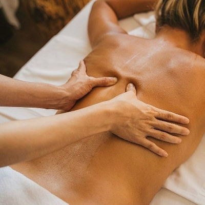
Общий массаж всего тела
- Классический массаж задней поверхности тела. От пяточек до головы!
- Классический массаж – отличное средство для укрепления здоровья, расслабления тела, профилактики заболеваний.
- При процедуре классического массажа выводятся продукты распада, шлаки и токсины, расщепляются жиры, кожа, разглаживается, становясь упругой и эластичной, уменьшаются проявления целлюлита.
- Основной целью общего массажа является интенсивное воздействие на мышечный каркас, что достигается с помощью поочередного сокращения и расслабления мышц.
- Одновременно с этим воздействию подвергаются кожа, органы, крово- и лимфоток, капилляры, сосуды. Вот почему при правильно исполненной технике массаж способен изменить работу органов и систем организма.
- Массаж всего тела, как и большинство других видов, выполняется курсами из 10-15 сеансов, позволяющих в полной мере получить эффект от процедуры. Продолжительность одного сеанса обычно составляет 1-1,5 часа, благодаря чему массирование обеспечивает прилив сил, легкость в теле, ощущение подтянутости мышц и кожи.
Продолжительность Массажа:
- 1 час - 2000 руб;
- 1,5 часа - 2700 руб.
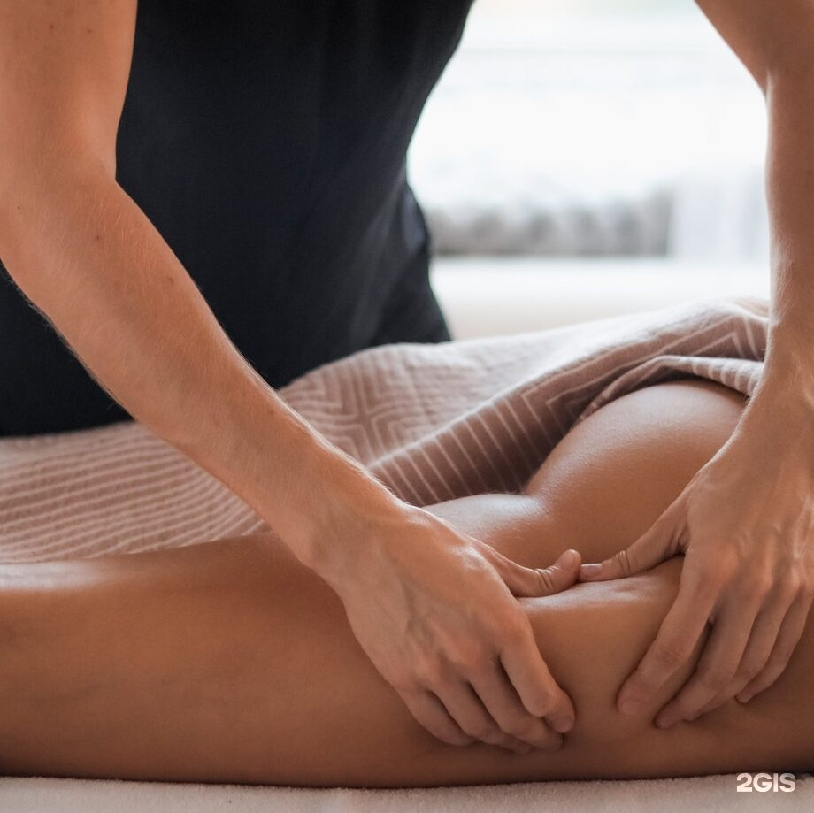
Массаж антицеллюлитный
- Антицеллюлитный массаж выполняется основном в тех областях тела, которые наиболее поражаются целлюлитом: бедра, колени, живот и ягодицы.
- Целлюлит чаще всего появляется у женщин в подкожно-жировой клетчатке. Кожа, поражённая целлюлитом, становится неровной и бугристой, напоминая апельсиновую корку. Чтобы достичь видимых результатов, необходимо провести несколько процедур антицеллюлитного массажа.
- Количество процедур может варьироваться в зависимости от индивидуальных особенностей организма и степени выраженности целлюлита. Обычно рекомендуется проводить от 10 до 15 сеансов массажа.
- Антицеллюлитный массаж помогает улучшить кровообращение, уменьшить отечность и способствует разрушению жировых клеток.
- В результате можно достичь значительного уменьшения объемов тела, улучшения эластичности кожи, уменьшения видимости целлюлита и улучшения общего состояния кожи.
- Однако для достижения наилучших результатов необходимо сочетать антицеллюлитный массаж с правильным питанием, физическими упражнениями и уходом за кожей.
- Также важно помнить, что эффект от массажа может быть временным, поэтому регулярность процедур и поддержание здорового образа жизни помогут сохранить достигнутые результаты на длительный срок.
Продолжительность Массажа:
- 45 минут - 2000 руб;
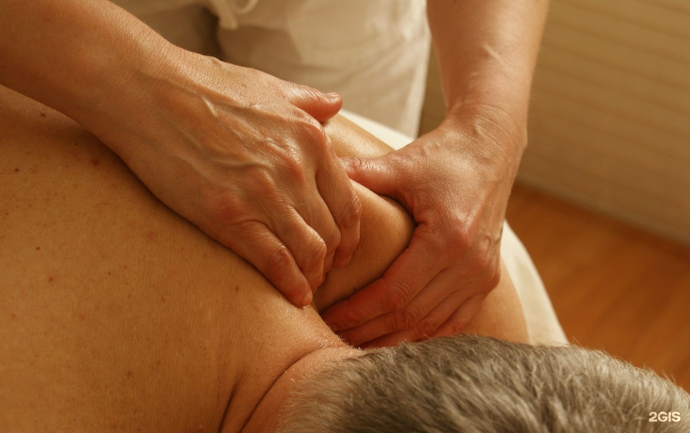
Массаж спина+шея
- Зажатые мышцы давят на позвонки, предплечья и плечевые суставы, нарушают их подвижность.
- Нарушается кровообращение в сосудах позвоночного столба, а это чревато нарушениями мозгового кровообращения. Возникают головные боли, поднимается давление, начинает кружиться голова.
- От боли в спине, шее могут страдать люди разного возраста. И виной тому не только патологии, но и неправильная поза во время сна, малоподвижный образ жизни, работа за компьютером.
- Избавиться от неприятных ощущений в шее, скованности в плечах, а также исправить осанку поможет профессиональный массаж шейно-воротниковой зоны.
- С его помощью можно достаточно быстро снять накопившуюся усталость и напряжение в мышцах плечевого пояса, шеи, повысить их эластичность и нормализовать тонус.
- Отмечается такой массажный эффект, как увеличение работоспособности, возвращение полноценного сна, также это отличная профилактика многих заболеваний опорно-двигательной системы.
- Чтобы избежать неприятных заболеваний из-за проблем в верхней области спины, делайте массаж шейно-воротниковой зоны регулярно, курсом из нескольких сеансов.
Продолжительность Массажа:
- 45 минут - 1600 руб;
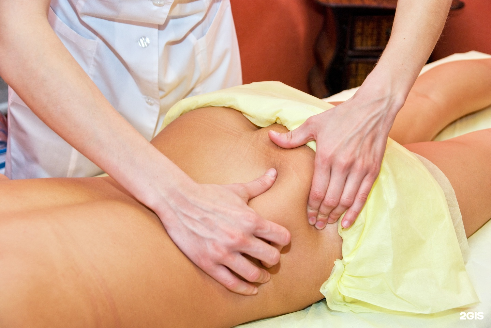
Массаж поясничного отдела + ноги
- Максимальная нагрузка во время ходьбы приходится на пояснично-крестцовую область, т. к, располагаясь близко к центру тяжести тела, позвоночник удерживает большую часть массы тела.
- На протяжении дня (даже в моменты сна) пояснично-крестцовая зона подвергается нагрузке и не отдыхает, потому переутомление и мышечный гипертонус в этом отделе позвоночного столба являются распространённым явлением.
- Они провоцируют возникновение поясничного остеохондроза, невралгических патологий, вызывающих расстройства органов репродуктивной системы и защемление коротких ветвей спинномозгового нерва.
-
Своевременное применение массажных техник для поясничной зоны способствует облегчению
признаков болезни либо полному предотвращению патологий.
Массирование нижних конечностей оказывает следующие действия:
- Улучшение кровообращения;
- Улучшение оттока лимфы;
- Снятие мышечных спазмов и, как следствие, устранение болей от мышечных зажимов;
- Расслабление и снятие усталости;
- Стимулирование питания тканей за счет улучшения движения крови и лимфы;
- Укрепление мышц и повышение мышечного тонуса;
- Снятие тревожности и улучшение самочувствия в результате устранения спазмов и боли.
- В зависимости от рекомендаций врача, и желания человека количество процедур колеблется от 7 до 15.
Продолжительность Массажа:
- 45 минут - 1600 руб;
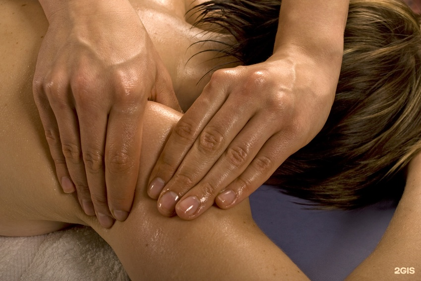
Массаж шейно-воротниковая зона + руки
- Боль в руках могут вызвать самые разные причины, включая чрезмерное напряжение мышц и травмы.
- Массаж рук помогает снять напряжение в мышцах, ускорить восстановление при различных травмах и заболеваниях, уменьшить отек и устранить рубцовую ткань.
- Если это не лечить, напряжение может ограничить движение кисти, плеча, локтя и вызвать боль. Во время массажа рук усиливается приток крови и разогреваются мышцы. Это позволяет мышечным волокнам растягиваться и повышать свою эластичность.
- Массаж рук может ускорить восстановление функций руки после травмы или операции. Такой эффект достигается за счет улучшения кровоснабжения в тканях и стимуляции лимфатической системы.
- Благодаря этому из организма быстрее выводятся излишки жидкости и уменьшается отечность.
Продолжительность Массажа:
- 30 минут - 1200 руб;
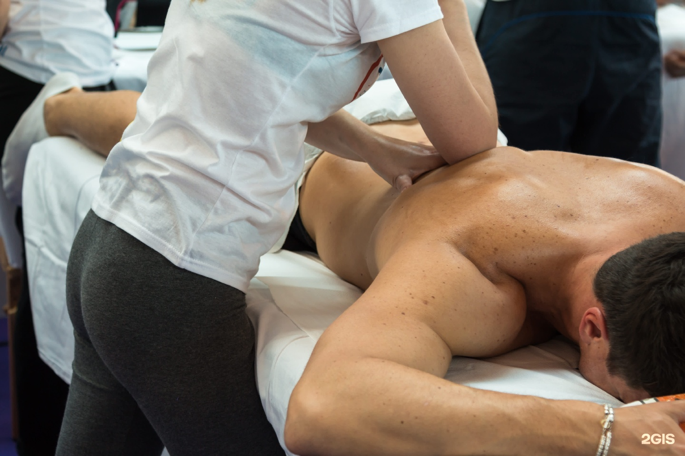
Спортивный массаж всего тела
- Спортивный массаж – это особая массажная техника, используемая для подготовки тела к усиленным физическим нагрузкам.
- Процедура направлена на повышение выносливости у спортсменов, восстановление мышц после тренировок, выступает в качестве подготовки к соревнованиям.
- Подойдёт такой вид массажа и тем, кто занимается спортом на любительском уровне.
- Положительно влияет такой массаж на работу сердца, тонизирует кровеносные сосуды, укрепляет суставы, повышает эластичность мышц, защищает их от микротравм и разрывов, предотвращает возникновение болевого синдрома после посещения спортзала. В целом спортивный массаж полезен для здоровья (при отсутствии противопоказаний), способствует профилактике травм и повреждений.
Продолжительность Массажа:
- 1 час - 2300 руб;
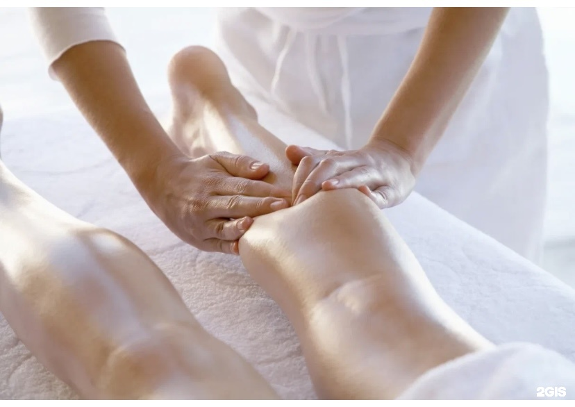
Лимфодренажный массаж
- Польза лимфодренажного массажа заключается в активации и перераспределении лимфоидной жидкости, стимуляции обменных процессов, укреплении клеточного и гуморального иммунитета.
- Задача мастера – ликвидировать последствия сбоя лимфотока, и деликатно заставить лимфатическую систему работать так, как ей предназначено природой.
-
Лимфодренаж помогает вывести из организма вредные продукты клеточного метаболизма,
ускорить циркуляцию лимфы, похудеть, улучшить состояние кожи, укрепить иммунитет.
Циркулируя снизу-вверх, лимфатическая жидкость выполняет ряд жизненно важных задач, основными из которых считаются:
- перенос клеток иммунной системы – антител, макрофагов и лимфоцитов, на участки, нуждающиеся в повышенной защите;
- сбор токсинов, отходов жизнедеятельности клеток и доставка их в лимфатические узлы для обезвреживания.
- Когда движение лимфы замедляется, фильтрационные органы и кровоток не справляются с эвакуацией вредных веществ, а иммунитет с защитными функциями.
- Сбой в работе лимфатической системы моментально отражается на самочувствии и внешности. Человек жалуется на повышенную утомляемость, отечность, нестабильное давление, частые простуды, прибавку в весе, дряблость кожи.
- О запущенном нарушении работы лимфосистемы свидетельствует варикоз глубоких вен, гипертензия, метаболический синдром, ожирение, низкий иммунный статус, лимфостаз.
Продолжительность Массажа:
- 1 час - 2000 руб;
- 1,5 часа - 2700 руб;
Аппаратная коррекция фигуры

Вакуумно-роликовый массаж
- Борьба с лишним весом, разрушение жировых отложений;
- Улучшает тонус кожи, за счет этого снижается риск обвисания кожи в результате колебания веса или возрастных изменений;
- Укрепление мышц. Специалисты рекомендуют вакуумный массаж людям с сидячей работой;
- Массаж помогает снять отечность, а также способствует активной работе лимфатической системы.
- Помогает убрать шрамы, рубцы и растяжки.
Показания и ожидаемые результат от массажа:
- Первый результат вакуумно-роликового массажа становится заметен в середине назначенного курса.
- Курс вакуумно-роликового массажа, для наилучшего результата, обычно берется от 10 сеансов.
- Кожа имеет более однородную структуру, становится подтянутой и упругой.
Продолжительность Аппаратной коррекция фигуры:
- 1 сеанс - 700 руб;
- 3 сеанса - 1950 руб;
- 5 сеансов - 3000 руб;
- 10 сеансов - 5000 руб.
20 минут- 1 сеанс.

RF - лифтинг
- RF-лифтинг (или РФлифтинг) лица и тела – терапия возрастных изменений, основанная на радиоволновом методе разогрева глубоких слоев кожи (дермы и гиподермы) под поверхностным слоем.
Суть метода заключается в точечном воздействии радиоволн на наиболее уязвимые зоны, где чаще всего образуется целлюлит и мешочки, то есть которым свойственна возрастная дряблость:
- живот;
- внутренняя поверхность бедер;
- бока (над подвздошными тазовыми костями);
- Также применяют радиочастотный лифтинг всего тела.
- В результате глубокого разогрева до различных температур (в зависимости от зоны и чувствительности кожи) жировой подслой истончается, сосуды рефлекторно расширяются, а с ускорением тока крови ускоряется обмен веществ в коже
Но главное – это превращения, которые происходят с коллагеном:
- Он меняет структуру – длинные растянутые волокна;
- Соединяющие дерму и эпидермис;
- Сокращаются;
- И кожа вновь обретает упругость и эластичность;
- Через 21 день начинает интенсивно вырабатываться новый коллаген;
- Обеспечивая длительный эффект.
Продолжительность Аппаратной коррекция фигуры:
- 1 сеанс - 700 руб;
- 3 сеанса - 1950 руб;
- 5 сеансов - 3000 руб;
- 10 сеансов - 5000 руб.
20 минут- 1 сеанс.

Кавитация
- Кавитация — это косметическая процедура, принцип действия которой заключается в разрушении клеток, образующих жировую ткань, с помощью низких частот ультразвука.
- Это своего рода липосакция без хирургического вмешательства.
- Благодаря ультразвуковым волнам, проникающим глубоко в тело (глубина проникновения может составлять от одного до трех сантиметров), процедура успешно устраняет жировые скопления и признаки целлюлита.
- Колебательные движения, создаваемые ультразвуковыми импульсами, уничтожают оболочки жировых клеток, растворяя их в лимфе и кровотоке.
- Впоследствии расщепленный жир выходит из организма естественным путем, а также осуществляется лимфодренажный массаж или процедура прессотерапии.
- Кавитация не травмирует другие клетки и ткани, отличается безболезненностью и отсутствием реабилитационного периода. Такая процедура производится с использованием специализированной аппаратуры.
- Во время сеанса пациент не ощущает дискомфорта, чувствуется легкое покалывание и приятное тепло в области взаимодействия с аппаратом.
- Уже через пять дней после первого сеанса кавитации можно наблюдать уменьшение в объеме до трех сантиметров, а проведение нескольких сеансов такой процедуры даст эффект, сравнимый с хирургической липосакцией.
- Количество сеансов, необходимое для получения желаемого результата, определяется индивидуально, в среднем, составляет от четырех до восьми процедур. Интервал между сеансами обычно составляет не менее 6-7 дней.
Продолжительность Аппаратной коррекция фигуры:
- 1 сеанс - 700 руб;
- 3 сеанса - 1950 руб;
- 5 сеансов - 3000 руб;
- 10 сеансов - 5000 руб.
20 минут- 1 сеанс.

Вакуумно-баночный массаж
- Это процедура, которая способствует увеличению кровотока и усилению обмена веществ.
- Позволяет осуществлять проработку ткани на глубине, которое невозможно при других видах массажа.
- В результате происходит активизация обменных процессов, уменьшается избыточные жировые отложения, снижается масса тела. ⠀
- Происходит лифтинг кожи, повышение её упругости и эластичности.
- Также, улучшения и укрепление контура, то есть, моделирования фигуры.
Продолжительность Аппаратной коррекция фигуры:
- Курс составляет 10 – 20 процедур проводимых с интенсивности с интервалом через день. Результатом становится заметным после пяти – восьми сеансов.
- 1 сеанс - 500 руб;
- 5 сеансов - 2000 руб;
- 10 сеансов - 3500 руб.
30 минут - 1 сеанс

Миостимуляция
- Под действием электрических импульсов мышцы сокращаются, начиная при этом активно потреблять питательные вещества из близлежащих тканей.
- Таким образом можно задействовать те мускулы и группы мышц, которые не прорабатываются в процессе физических упражнений. Однако смысл процедуры не в том, чтобы заменить физкультуру, не прилагая усилий.
Суть метода миостимуляции:
- В результате мышечных сокращений происходит стимуляция кровеносных и лимфатических сосудов, что влечет за собой глубокий терапевтический эффект.
- Благодаря такому своеобразному массажу сосудов улучшается тканевая циркуляция жидкостей, усиливается отток лимфы, улучшается кровоснабжение тканей не только в области воздействия, но и во всем организме.
- В результате усиливается метаболизм, расщепляется жировая ткань, уходят отеки, мышцы и кожа приобретают упругость и тонус уже после первой процедуры.
Причем стимулированные процедурой мышцы продолжают развиваться еще длительное время после нее.
Показания:
- Слабость и малый объем мышц;
- лишний вес;
- Целлюлит;
- Отечность;
- застой лимфатической жидкости.
Продолжительность Аппаратной коррекция фигуры:
- 1 сеанс - 500 руб
- 5 сеансов - 2000 руб.
- 10 сеансов - 3500 руб.
1 сеанс - 30 минут

Прессотерапия
Знакомьтесь, наш новый аппарат прессотерапии с инфракрасным прогревом!!!
- Прессотерапия это один из видов аппаратного массажа, во время которого на тело человека воздействуют сжатым воздухом, стимулируя работу лимфатической и кровеносной системы.
- В конце прошлого века голландский ученый Ван Дер Молен, воодушевленный исследованиями француза Эмиля Воллера, изобрел первое компрессионное устройство для лечения людей, страдающих от отёков и лишнего веса. С тех пор такой вид лимфодренажного массажа относят к эффективным физиотерапевтическим методам и широко используют с лечебной и профилактической целью.
- Когда в организме застаивается лимфа, могут возникать разные болезни и просто неприятные состояния.
- Пневмомассаж разгоняет лимфоток, предупреждая патологии. Импульсное воздействие активизирует кровообращение и обменные процессы на клеточном уровне. Все ткани и органы получают много кислорода и питательных веществ.
- Восстанавливаются важные функции, происходит общее оздоровление. Из организма уходит лишняя жидкость и токсины. Обеспечивается спазмолитический эффект. Проходит усталость, скованность движений.
- Пациенты отмечают повышение настроения и общего тонуса, прилив сил. Курс прессотерапии повышает устойчивость к стрессам, иммунитет. ⠀
Продолжительность Аппаратной коррекция фигуры:
- 1 сеанс - 500 руб
- 5 сеансов - 2250 руб.
- 10 сеансов - 4000 руб.
1 сеанс - 30 минут
SPA-программа
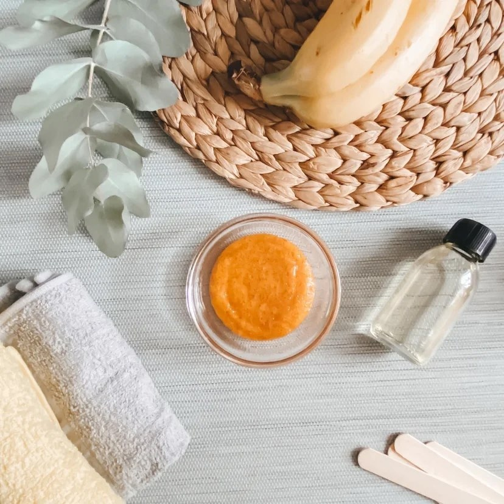
Тропический микс
- Прогрев в кедровой бочке с фитопаром на основе алтайских трав (хорошо расслабляет и успокаивает нервную систему) -15 мин.
- Наносим на все тело скраб «Organic mango»(органическое масло манго и тростниковый сахар).
- Легкий пилинговый массаж – 10мин.
- Принятие душа.
- Нанесение на все тело массажными движениями увлажняющего крема «Coconut Milk»- глубоко питает, восстанавливает и увлажняет кожу - 10мин.
- Спокойная, релаксирующая музыка.
- В завершение программы чашечка ароматного чая.
- В программе для 2х человек добавляется аппаратный массаж стоп.
Продолжительность SPA-программы:
- Для одного – 50 минут - цена 2000 руб;
- Для двоих- 1 час 20 мин - цена 3500 руб.
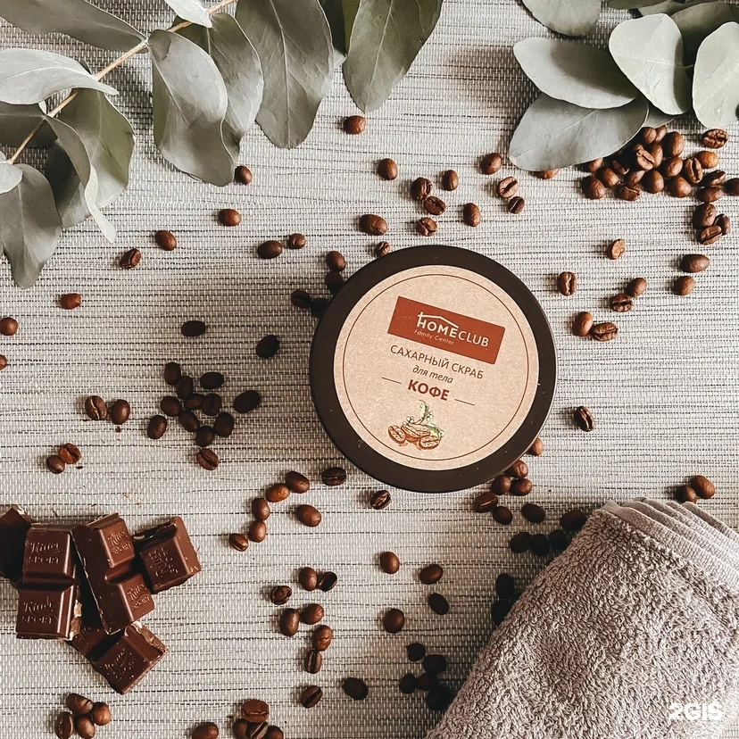
Горячий шоколад
- прогрев в кедровой бочке с фитопаром на основе алтайских трав (хорошо расслабляет и успокаивает нервную систему) – 15мин
- наносим на тело гипоаллергенный сахарный скрабом «Карамель» (смягчает и питает кожу, снабжая ее полезными веществами).
- легкий пилинговый массаж – 10мин.
- принятие душ.
- нанесение крем-маски «горячий шоколад» на проблемные участки тела.
- разогревающее обертывание с применением маски «горячий шоколад» (на основе масла какао и жгучего перца, обеспечивает многоуровневое воздействие на целлюлит и избыточные локальные жировые отложения) -20 мин.
- принятие душа.
- питание и увлажнение тела кокосовым маслом; (наносится на всё тело массажными движениями) – 10мин.
- спокойная, релаксирующая музыка.
- в завершение программы — чашечка ароматного чая.
- В программе для 2х человек, добавляем аппаратный массаж стоп.
Продолжительность SPA-программы:
- Для одного – 1 час 15 мин - цена 2800 руб;
- Для двоих- 2 часа - цена 5100 руб .
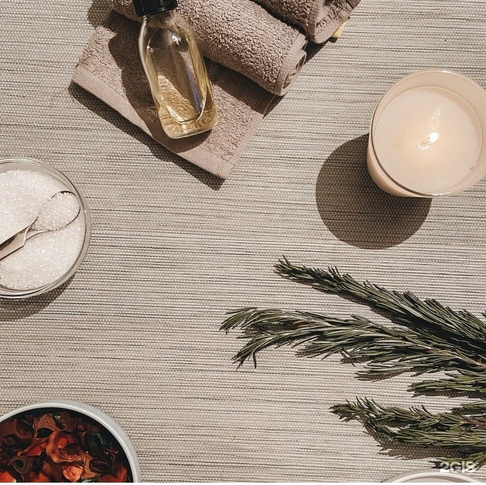
Лёд и пламя
- прогрев в кедровой бочке с фитопаром на основе алтайских трав (хорошо расслабляет и успокаивает нервную систему) -15 мин.
- нанесение на все тело солевой скраб-маски «Кофе» (в состав входит соль Мертвого моря, масло сладкого миндаля и кофейный порошок, улучшающие внешний вид кожи, омолаживающие и питающие ее).
- легкий пилинговый массаж – 10мин.
- Принятие душа.
- Охлаждающее обертывание с применением маски «Гель-эластик» (на основе экстракта фукуса, ламинарии и ментола. Для подтягивания кожи и уменьшения растяжек.) -20 мин.
- нанесение массажными движениями Антицеллюлитного дренажного крема с экстрактом ананаса, красного перца, кофеином и эфирным маслом апельсина. (сжигает подкожный жир, повышает эластичность кожи, эффект лифтинга) – 10мин.
- принятие душа.
- спокойная, релаксирующая музыка.
- в завершение программы чашечка ароматного чая.
- В программе для 2х человек, добавляем аппаратный массаж стоп.
Продолжительность SPA-программы:
- Для одного – 1 час 20 мин - цена 3000 руб;
- Для двоих- 2 часа - цена 5500 руб .
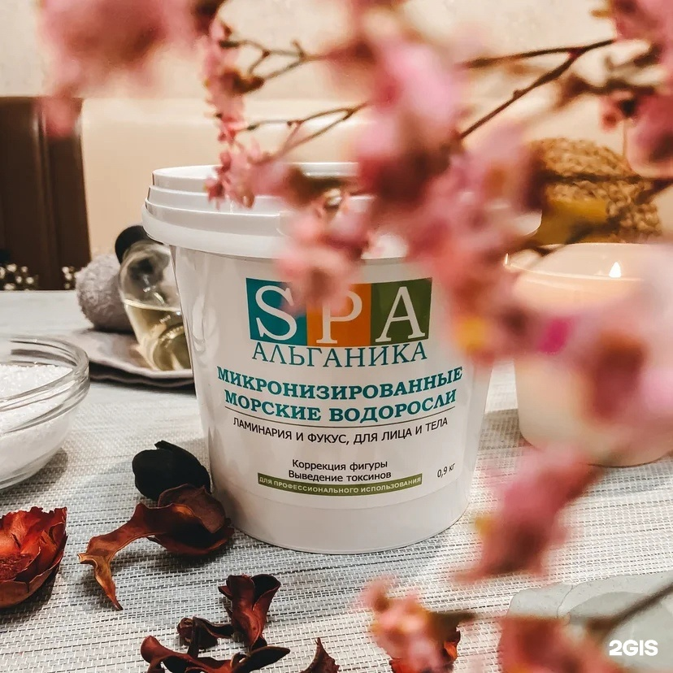
Морской коктейль
- прогрев в кедровой бочке с фитопаром на основе алтайских трав (которые обладают успокаивающим и гармонизирующим эффектом, выводят токсины и лишнюю жидкость из организма);
- нанесение на все тело солевой скраб-маски «Ламинария» (средство для очищения и обновления кожи с экстрактом ламинарии и кристаллами морской соли);
- легкий пилинговый массаж (Стимуляция обновления кожи, улучшение кровообращения, подготовка кожи к дальнейшему уходу)
- Принятие душа.
- обертывание всего тела с применением маски из микронизирированных водорослей «Ламинария и фукус» (используется как тонизирующая, регенерирующая, подтягивающая маска);
- Принятие душа.
- нанесение на все тело водорослевого крема с эфирными маслами лаванды и розмарина (нежный и изысканный лавандовый аромат крема делает SPA-процедуру не только полезной, но и приятной. Крем помогает снять напряжение, способствует расслаблению, оказывает на кожу регенерирующее, укрепляющее действие);
- релаксирующий массаж задней части поверхности тела (ноги, руки, спина) - 15 мин
- Аппаратный массаж
- спокойная, релаксирующая музыка
- в завершение программы чашечка ароматного чая.
Продолжительность SPA-программы:
- Для одного – 1 час 40 мин - цена 3500 руб;
- Для двоих- 2 часа - цена 6000 руб.
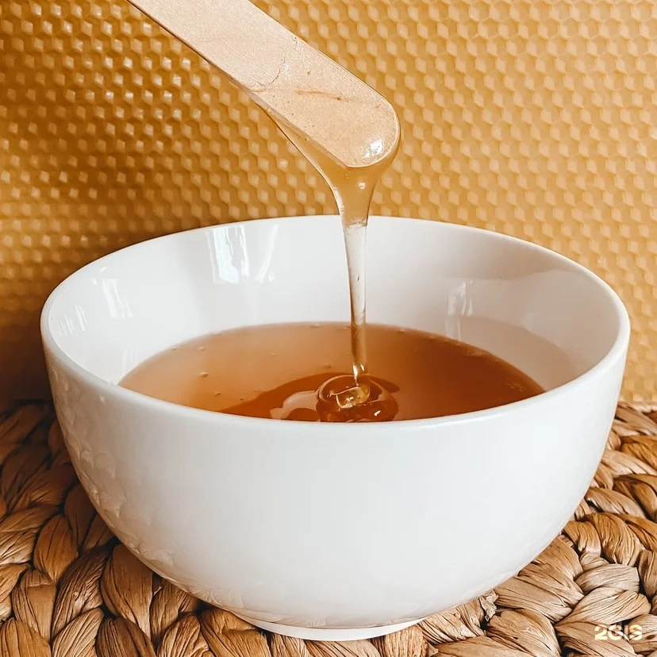
Медовая нежность
- Прогрев в кедровой бочке с фитопаром на основе алтайских трав (которые обладают успокаивающим и гармонизирующим эффектом, выводят токсины и лишнюю жидкость из организма );
- Нанесение на все тело облепихово-медового скраба; глубокое очищение (очищает и обновляет кожу, помогая сохранить красоту и молодость);
- легкий пилинговый массаж (Стимуляция обновления кожи, улучшение кровообращения, подготовка кожи к дальнейшему уходу)
- Принятие душа.
- обертывание всего тела с применением натурального меда (питает и повышает тонус кожи, устраняет отечность);
- принятие душа;
- нанесение облепихового масла (крем) на все тело. Входящее в состав крема масло алтайской облепихи глубоко питает, восстанавливает и увлажняет, насыщает кожу важнейшими жирными кислотами, необходимыми для ее питания
- релаксирующий массаж задней части поверхности тела (ноги, руки, спина) – 15 минут;
- аппаратный массаж стоп;
- спокойная, релаксирующая музыка.
- в завершение программы чашечка ароматного чая.
Продолжительность SPA-программы:
- Для одного – 50 минут - цена 3500 руб;
- Для двоих- 1 час 20 мин - цена 6000 руб.
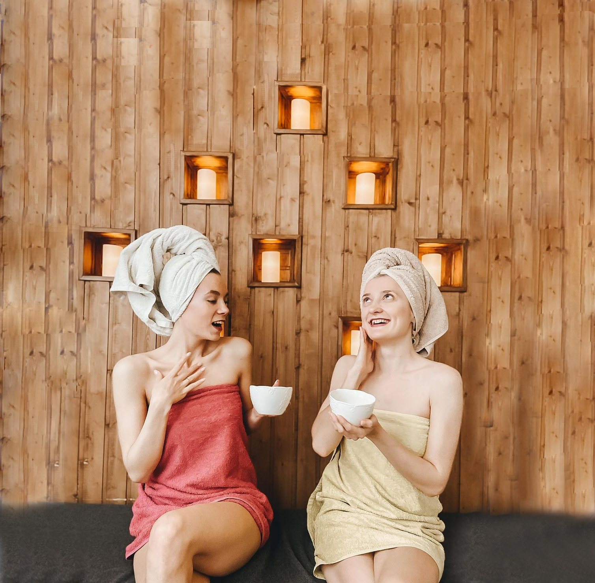
Хорошее настроение
- прогрев в кедровой бочке с фитопаром на основе алтайских трав (которые обладают успокаивающим и гармонизирующим эффектом, выводят токсины и лишнюю жидкость из организма) — 15 минут;
- нанесение на все тело сахарного скраба «Апельсин и корица» " Благодаря интенсивному питательному действию скраба, он предварительно смягчает кожу, пропитывая ее полезными маслами, и при этом позволяет провести мягкое отшелушивание ороговевших частиц, не травмируя кожу. Приятный аромат корицы бодрит и позволяет получить удовольствие от процедуры.;
- легкий пилинговый массаж (Стимуляция обновления кожи, улучшение кровообращения, подготовка кожи к дальнейшему уходу) - 10 минут
- Принятие душа.
- обертывание всего тела с использованием маски "Классический шоколад" (тонизирование, питание, восстановление, увлажнение, повышение упругости)— 20 минут;
- Принятие душа.
- нанесение шоколадного крема для тела с цветами апельсина. (подтягивает и омолаживает кожу, значительно улучшает ее упругость. Аппетитный шоколадно-цитрусовый аромат поднимает настроение и заряжает энергией)
- релаксирующий массаж задней части поверхности тела (ноги, руки, спина) — 15 минут;
- аппаратный массаж стоп;
- спокойная, релаксирующая музыка.
- в завершение программы — чашка ароматного чая.
Продолжительность SPA-программы:
- Для одного – 1 час 40 мин - цена 3500 руб;
- Для двоих- 2 часа - цена 6000 руб.
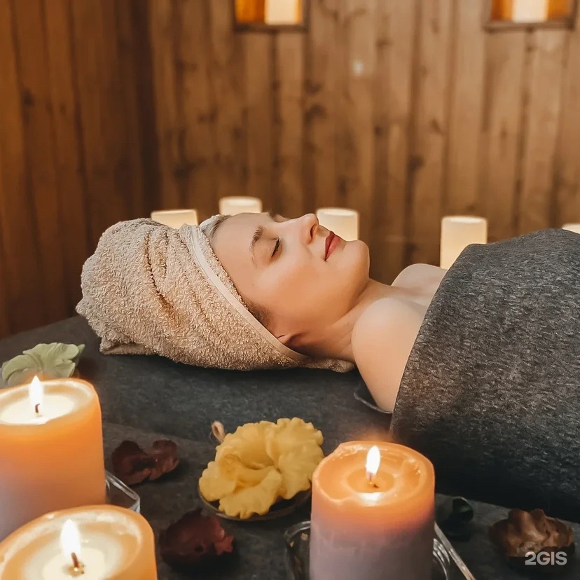
Для милых дам
- прогрев в кедровой бочке с фитопаром на основе алтайских трав (которые обладают успокаивающим и гармонизирующим эффектом, выводят токсины и лишнюю жидкость из организма) — 15 минут;
- нанесение на все тело сахарного скраба «Апельсин и корица», Благодаря интенсивному питательному действию скраба, он предварительно смягчает кожу, пропитывая ее полезными маслами, и при этом позволяет провести мягкое отшелушивание ороговевших частиц, не травмируя кожу. Приятный аромат корицы бодрит и позволяет получить удовольствие от процедуры;
- легкий пилинговый массаж (Стимуляция обновления кожи, улучшение кровообращения, подготовка кожи к дальнейшему уходу)— 10 минут;
- принятие душа;
- обертывание всего тела с использованием омолаживающей маски на водорослях и голубой или розовой (по наличию) глине — 20 минут;
- принятие душа;
- нанесение лифтинг-крема с гиалуроновой кислотой;
- релаксирующий массаж задней части поверхности тела (ноги, руки, спина) — 15 минут;
- парафинотерапия рук, с применением крема парафина (интенсивно увлажняет и смягчает кожу, восстанавливая ее гидролипидный баланс, возвращает упругость и эластичность) ;
- аппаратный массаж стоп;
- спокойная, релаксирующая музыка.
- в завершение программы — чашечка ароматного чая.
Продолжительность SPA-программы:
- Для одного – до 2 часов - цена 4000 руб;
- Для двоих- 2 часа 20 мин - цена 7000 руб.
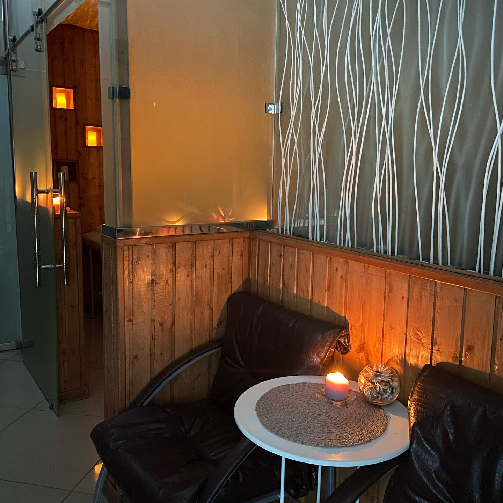
Love & Spa
- прогрев в кедровой бочке с фитопаром на основе алтайских трав (которые обладают успокаивающим и гармонизирующим эффектом, насыщают вашу кожу полезными веществами);
- нанесение на все тело облепихово-медового скраба; (превосходно очищает и обновляет кожу, помогая сохранить красоту и молодость);
- легкий пилинговый массаж (Стимуляция обновления кожи, улучшение кровообращения, подготовка кожи к дальнейшему уходу) — 10 минут;
- принятие душа;
- шоколадное обертывание, вкусное и полезное лакомство для кожи (увлажнение и питание) – 25 минут
- принятие душа;
- нанесение облепихового масла (крем) на все тело (масло алтайской облепихи глубоко питает, восстанавливает и увлажняет);
- релаксирующий массаж задней части поверхности тела (ноги, руки, спина) – 15 миут.
- лимфодренажные очки для мужчин;
- уход за лицом (демакияж, тонизация, сыворотка питательная) для женщин;
- аппаратный массаж стоп (в подарок);
- спокойная, релаксирующая музыка.
- в завершение программы — чашечка ароматного чая.
Продолжительность SPA-программы:
- Для одного – до 2х часов - цена 4000 руб;
- Для двоих- 2 часа 20 мин - цена 7000 руб.
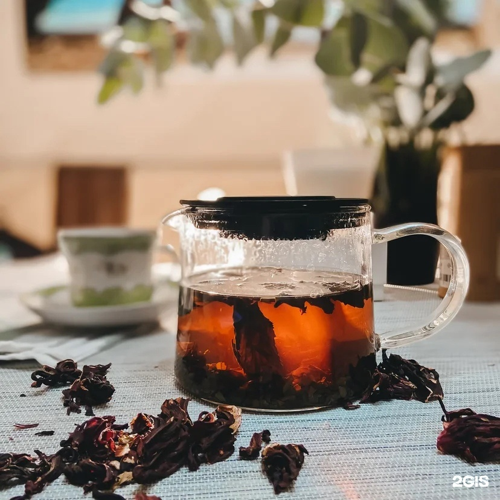
Всё включено
- прогрев в кедровой бочке с фитопаром на основе алтайских трав (которые обладают успокаивающим и гармонизирующим эффектом, насыщают вашу кожу полезными веществами) — 20 минут;
- нанесение на все тело крем- скраб «Ламинария» (Усиливает кровообращение и лимфодренаж, способствует выведению лишней жидкости и токсинов.);
- легкий пилинговый массаж. После процедуры пилинга косметические средства лучше впитываются и более эффективно действуют на кожу - 10 минут
- принятие душа;
обертывание всего тела на выбор:
- микромизированные водоросли
- мед
- классический шоколад
- горячий шоколад
- охлождающей маски «Гель-эластик») — 30 минут;
На выбор ( во время обертывания):
- принятие душа;
- нанесение на всё тело лифтинг-крема с гиалуроновой кислотой;
- релаксирующий массаж задней части поверхности тела (ноги, руки, спина) — 15 минут;
- парафинотерапию рук с применением крема парафина (интенсивно увлажняет и смягчает кожу рук, восстанавливая ее гидролипидный баланс, возвращает упругость и эластичность) ;
- аппаратный массаж стоп, снимает усталость с ног, разминает мышцы стоп;
- спокойная, релаксирующая музыка
- в завершение программы — чашечка ароматного чая.
Продолжительность SPA-программы:
- Для одного – 2 часа - цена 4500 руб;
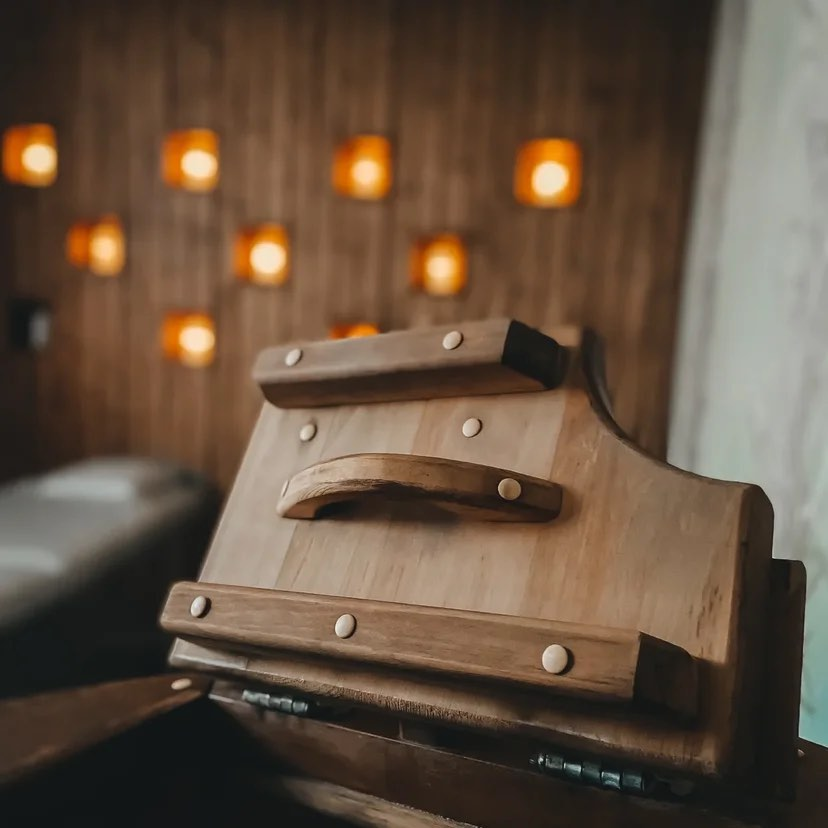
For men
- прогрев в кедровой бочке с фитопаром на основе алтайских трав (которые обладают успокаивающим и гармонизирующим эффектом, выводят токсины и лишнюю жидкость из организма) — 15–20 минут;
- принятие душа;
- питание и увлажнение тела кокосовым маслом;
- релаксирующий массаж задней части поверхности тела (ноги, руки, спина) — 30 минут;
- аппаратный массаж стоп — 15 минут;
- спокойная, релаксирующая музыка
- в завершении программы чашечка ароматного чая.
Продолжительность SPA-программы:
- До 1 часа 30 минут - цена 3000 руб
Лазерная эпиляция
| Название процедуры | Диодный лазер | элос |
|---|---|---|
| Руки до локтя | 1800 руб | 2200 руб |
| Руки полностью | 2100 руб | 2600 руб |
| Ноги до колена(колено включительно) | 2100 руб | 2600 руб |
| Ноги полностью | 3200 руб | 4000 руб |
| Бикини классика | 750 руб | 900 руб |
| Бикини тотальное | 1800 руб | 2200 руб |
| Подмышки | 750 руб | 900 руб |
| Верхняя губа | 600 руб | 700 руб |
| Подбородок | 600 руб | 700 руб |
| Линия живота | 600 руб | 700 руб |
Фитобочка
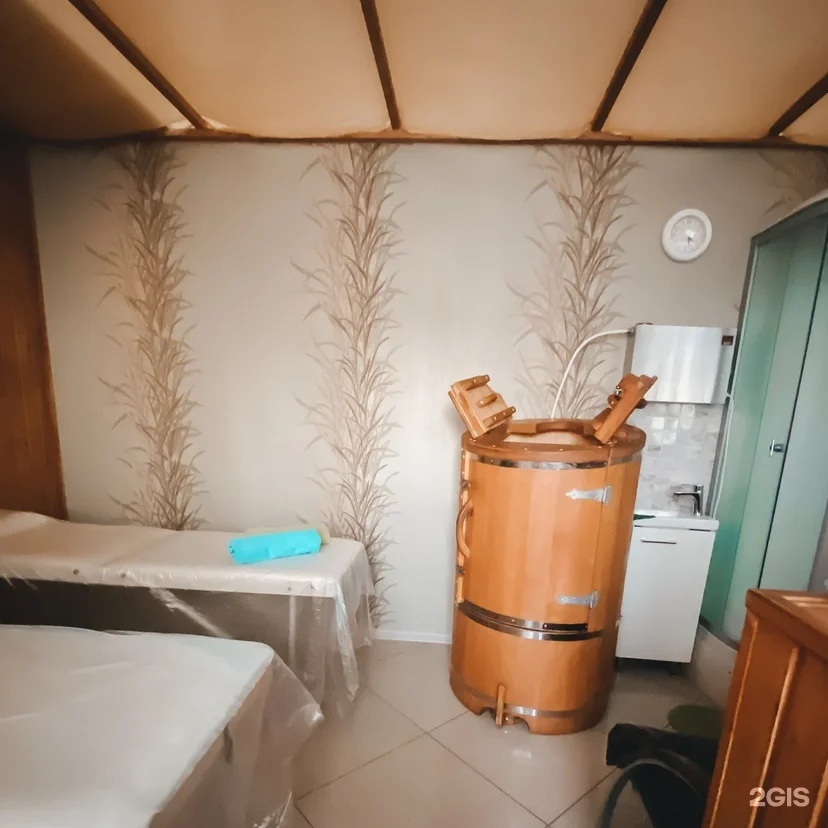
Фитобочка
- Регулярное посещение фитобочки оказывает многостороннее действие на весь организм, ведь при парении с целебным паром контактирует все тело, за исключением головы.
Невозможно перечислить все положительные эффекты от сеанса в фитобочке, но основные направления воздействия все же выделить можно:
- Разогревается и распаривается кожа, открываются и очищаются поры;
- Расширяются кровеносные сосуды, улучшается крово- и лимфообращение;
- Активизируется обмен веществ;
- Через кожу с потом усиленно выводятся соли, шлаки и токсины, а вместо этого кожа напитывается целебными веществами и эфирными маслами;
- Повышается иммунитет, нормализуется работа дыхательной, нервной, сердечно-сосудистой, мочеполовой, эндокринной систем;
- Омолаживается и подтягивается кожа, уменьшаются явления целлюлита, становятся менее заметными растяжки, уходит лишний вес.
Продолжительность Фитобочки:
- 1 сеанс - 700 руб;
- 3 сеанса - 1 950 руб (по 650 руб за одно посещение)
- 5 сеансов - 3000 руб. (по 600 руб за одно посещение)
- 10 сеансов - 5500 руб .(по 550 руб за одно посещение)
Время проведения одного сеанса 15-20 минут
Аппаратная косметология
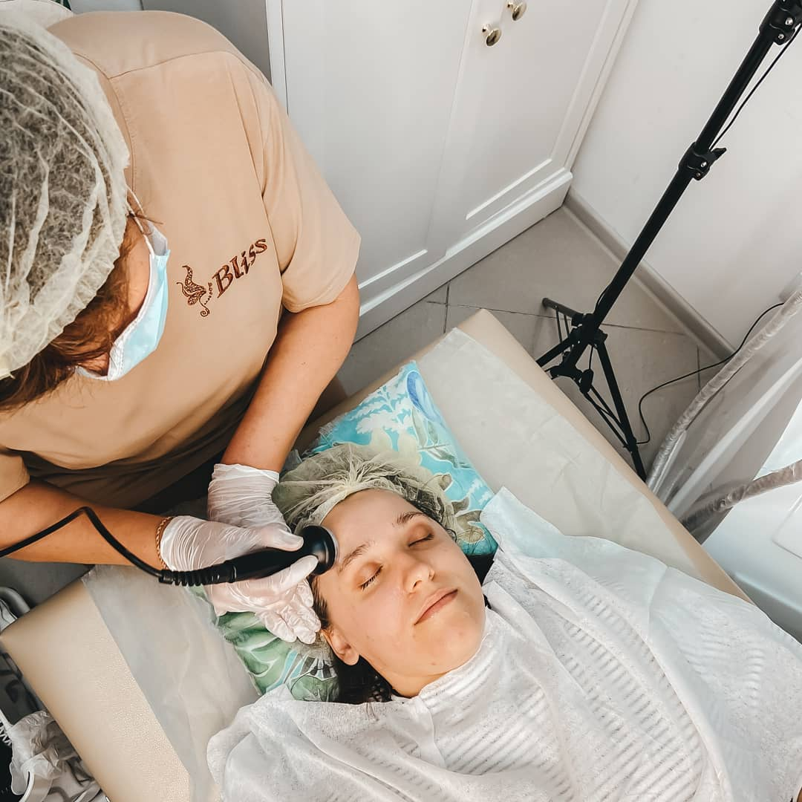
RF лифтинг лица
- RF лифтинг лица - аппаратная процедура, направленная на подтяжку тканей, улучшение состояния и структуры кожи посредством воздействия радиоволновой энергии.Идеально подходит для устранения ряда эстетических несовершенств кожи.
- При нагреве дермы до высокой температуры (примерно 42 градусов и выше) коллагеновые волокна сжимаются и утолщаются, что приводит к формированию подкожного каркаса из собственных волокон, который натягивает кожу.
- При разогреве дермы запускается мощная стимуляция волокон, благодаря чему происходит синтез нового коллагена, эластина, гиалоурановой кислоты, восстанавливается эластичность сосудов.
- От нагревания увеличивается проницаемость клеточных мембран, следовательно, интенсивнее происходит поглощение активных веществ препаратов, используемых во время процедуры.
- Основное воздействие на жировую ткань включается процесс расщепления жиров. За счет термического воздействия на жировые клетки происходит их расщепления на глицерин и жирные кислоты, после чего жирные кислоты медленно утилизируются печенью.
- Происходит ускорение смены поколения жировых клеток: старые, паталогические жировые клетки сменяются нормальными, обновленными клетками, кроме того, происходит улучшение местного кровоснабжения за счет расширения кровеносных и лимфатический сосудов.
Противопоказаниями к проведению RF-лифтинга являются:
- Беременность, лактация;
- Текущие воспалительные и инфекционные заболевания;
- Доброкачевственные и злокачественные образования;
- Серьезные хронические заболевания (сердечная, легочная, почечная недостаточность и т.д);
- Разацеа;
- Наличие кардиостимулятора;
- Наличие металлических имплантов в зоне предполагаемого воздействия радиоволновой энергии;
- Склонность к образованию келлоидных рубцов;
- Кроме того, не рекомендуется проводить РФ-лифтинг при наличии рассывающихся имплатнов (филлеров), т.к. это сократит продолжительность эффекта от его введения.
Продолжительность сеанса 20 минут:
- 1 сеанс - 1000 руб
- 5 сеансов - 4500 руб
- 10 сеансов - 8000 руб
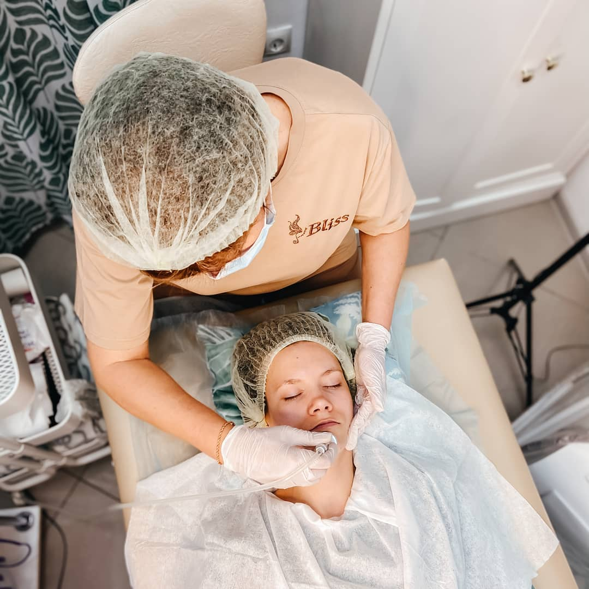
Вакуумно-роликовый массаж лица
- Вакуумно-роликовый массаж лица подразумевается чистку, омоложение и избавления от жирных отсложений.
- Специалисты считают, что комплексный подход к уходу за кожей творит чудеса если речь идет о коже лица. В каждой индивидуальном случае косметолог назначает различные манипуляции. Универсальной процедурой считается вакуумно-роликовый массаж лица - он показан практически каждой женщине и способен решить многие проблем.
Также показания к вакуумно-роликовому массажу являются:
- Неровности и бугрисость кожи;
- Отёчность лица;
- Дряблая кожа;
- Фиброз тканей;
- Нарушение кровообращения;
- Наличие "мешков", темных кругов и синяков под глазами;
- Рубцы и шрамы на лице.
- В каждом из этих случаев вакуумно-роликовый массаж станет незаменимой полезной процедурой, которая поможет восстановить красоту вашей кожи и выглядеть гораздо моложе своих лет.
Противоказание вакуумно-роликовый массаж:
- Онкологические заболевания и сахарный диабет;
- Беременность и период лактации;
- Вирусные заболевания в период обострения;
- "Ломкость" сосудов;
- Купероз;
- Любые повреждения кожи - ранки, царапины, гнойники;
- Очень чувствительная кожа;
- Большое количество прыщиков на лице;
- Наличие крупных родинок.
Подготовка к процедуре:
- Во-первых, следует соблюдать диету и за несколько дней до посещения специалиста отказаться от острой, жирной и калорийной пищи.
- Во-вторых, необходимо употреблять больше количество чистой воды - до 2,5 литров в сутки. Важно также провести тщательно очистку поверхности кожи.
- В-третьих, настраивайтесь на отличный результат и заботьтесь о красоте и здоровье вашей кожи!
Продолжительность сеанса - 2- минут:
- 1 сеанс - 1000 руб
- 5 сеансов - 4500 руб
- 10 сеансов - 8000 руб
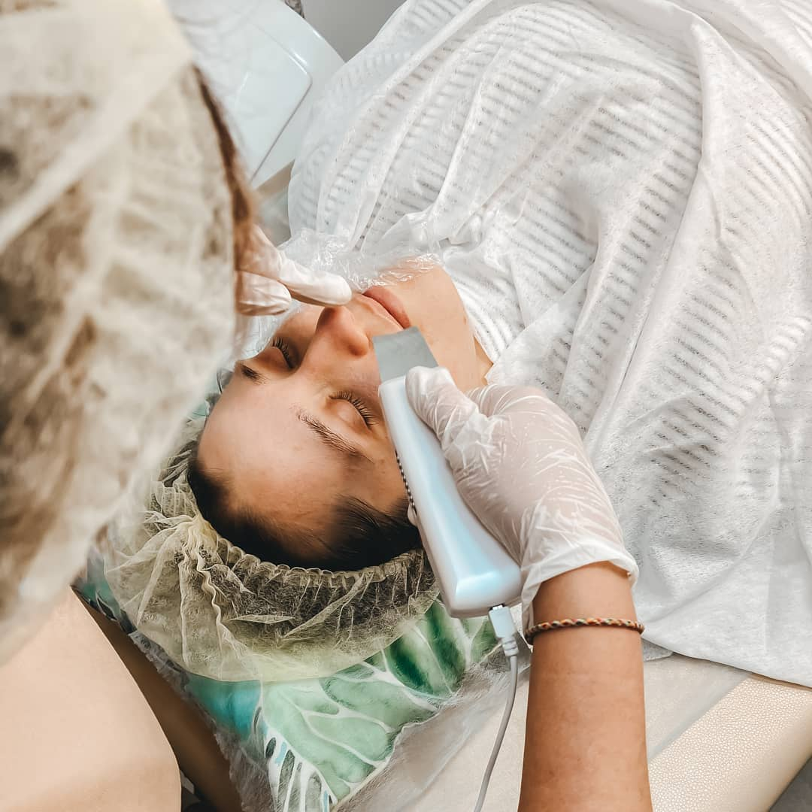
Ультразвуковая чистка
- Ультразвуковая чистка (УЗ чистка ) - проводится с помощью специального аппарата в виде лопатки - скрабера.
Эффект от УЗ чистки виден уже сразу после сеанса, но наиболее заметен будет через три дня:
- Поверхность кожи становится гладкой и чистой;
- Очищаются сальные железы, поры, и кожа начинает лучше дышать;
- Уберается старый роговой слой, и проявляется молодые клетки;
- Разглаживаются морщины;
- Ускоряется клеточный обмен веществ;
- Улучшается тонус кожи;
- Активизируется регенерация клеток;
- Кожа в результате воздействия становиться мягче, свежее, улучшается ее увлажненность, устраняется отечность, выравнивается микрорельеф;
- Благодаря микромассажу кожного слоя на клеточному уровне происходит ускорение обменных процессов в клетках, улучшение кровоснабжения и циркуляции лимфы
Процедура УЗ чистки лица противопоказана:
- При наличии острой формы угревой болезни (массы высыпаний);
- Если на коже имеются свежие повреждения или места воспалений;
- Если прошло достаточно времени после процедуры глубокого химического пилинга лица;
- В период беременности;
- При наличии сердечно - сосудистых заболеваний;
- После имплантации в кожу лица "золотых нитей";
- При воспалении лицевого нерва и невралгии;
- При наличии опухолей как злокачественных, так и доброкачественных;
- При повышенной температуре;
- При наличии острой формы инфекционных болезней.
Продолжительность процедуры ультразвуковой чистки:
- 45 минут - 1700 руб.
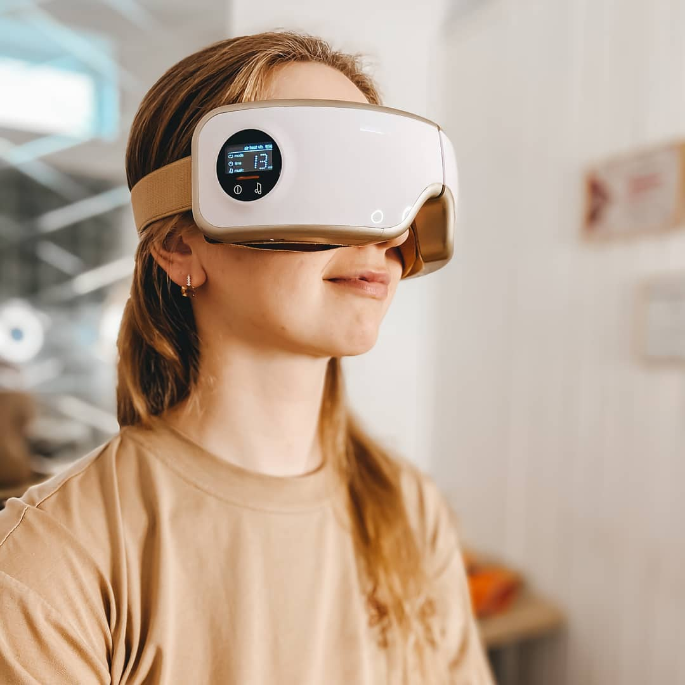
Лимфодренажные очки
- Лимфодренажные очки - это специальное smart-устроиство, которое предназначено для проведения массажа такой чувствительной области, как глаза.
- С помощью их мягкого воздействия на органы зрения удается снять усталость и напряжение глазных мышц, улучшить кровоток и избавиться от образовавшихся мешков под глазами.
- Лимфодренажные очки выглядят как обычная маска для плавания, но на самом деле они представляют собой сложное устройство. В самой маске расположены надувающиеся подушечки, которые делают нежный и аккуратный массаж. Эта процедура помогает быстро снять напряжение и усталость глаза.
- Также эти очки делают лимфодренажный массаж с прогреванием. Воздействием теплом улучшает кровоснабжение и микроциркуляцию в области глаз.
- Отдельная функция smart-очков - это мультичастотный вибромассаж. Такой вид массажа рекомендован людям, которые страдают от близорукости, дальнозоркости или астигматизма. Во время этой процедуры тренируются глазные мышцы, увеличивается их работоспособность, стабилизируется зрения.
- Благодаря массажному эффекту они способствуют оттоку лимфы и обеспечивают тканям доступ необходимого количества кислорода, что не только благотворно действует на зрительные органы, но и на состояние кожи в этой области, позволяя вернуть ей здоровый цвет и тонус.
Противопоказания для применения smart-очки:
- Их нельзя использовать пациентам, которые имеют такие глазные заболевания, как катаракта или глаукома;
- Данная процедура не подойдет для дошкольников и беременных женщин;
- Пациентам с нарушениями целостности кожи в области глаз использование массадных очков противопоказано;
- Также они запрещены для людей, которые имеют острые воспалительные заболевания глаз, онкологические, невралогические паталогии или тяжелые заболевания сердечно-сосудистой системы.
Продолжительность процедуры лимфодренажных очков:
- 1 сеанс- 200 руб
- 5 сеансов- 750 руб
- 10 сеансов - 1000 руб